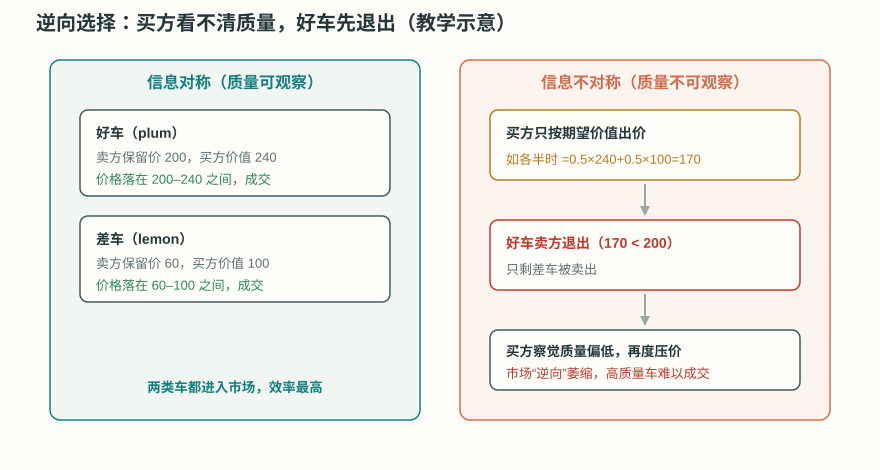
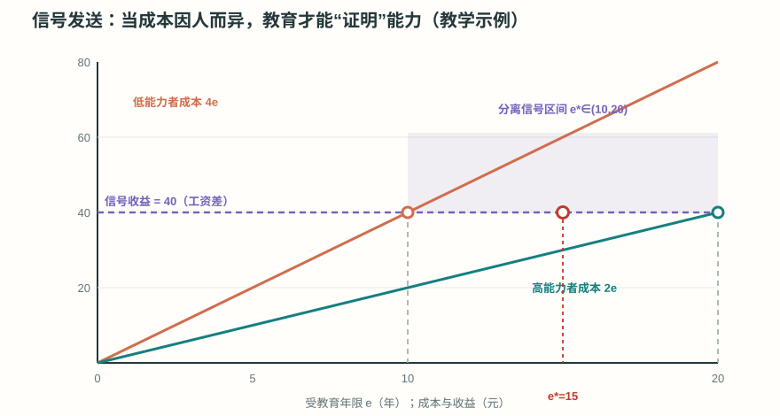

CHAPTER 21 · MICROECONOMICS
信息不对称：逆向选择与道德风险
当一方比另一方知道得更多，市场会发生什么：二手车的“逆向选择”、教育信号的分离作用，以及签约后的道德风险。
你看到的，和我看到的
二手车卖家知道车况，买家不知道；投保人了解自己的风险，保险公司不知道；员工清楚自己有多努力，雇主看不到。当交易一方掌握更多信息时，市场会出现两类系统性的失灵。
交易之前的信息不对称会导致逆向选择 adverse selection——“坏”的一方挤走“好”的一方；交易之后的信息不对称会导致道德风险 moral hazard——行为变得不再谨慎。本章用教学示例分别把它们算清楚。
二手车市场：逆向选择
教学示例：市场上好车（plum）卖方保留价 200、买方价值 240；差车（lemon）卖方保留价 60、买方价值 100。买方无法区分两类车，只能按期望价值出价。设好车占比为 f，则
两类车各占一半时，期望价 =0.5×240+0.5×100=170。但 170 低于好车卖方的保留价 200，好车车主不愿卖；市场上于是只剩差车。买家一旦察觉，会进一步压低出价——高质量商品被逐出市场，这就是逆向选择，也叫“次品市场”问题。
好车要能成交，期望价至少得覆盖其保留价：100+140f ≥ 200，即 f ≥ 5/7 ≈ 0.714。好车占比太低时，市场就会“逆向”萎缩。

信号发送：用成本证明能力
信息少的一方有没有办法让对方“自证”？有——信号发送 signaling。只要某种行为的成本对不同类型的人不同，它就可能成为可信信号。教育是典型例子。
教学示例：高能力者受教育的成本为 2e，低能力者为 4e；接受教育可带来 40 的工资收益。要让信号可信：低能力者不愿模仿，需要成本高于收益；高能力者愿意投入，需要成本低于收益：
任何落在 (10,20) 之间的受教育年限都能把两类人分开，形成分离均衡 separating equilibrium。哪怕教育并不提高生产力，只要成本因人而异，它仍能传递能力信息。

需要分清两种解释：教育提高人力资本（真的提升生产力）与教育作为信号（只传递既有能力）。现实里两者常常并存，不能只凭学历就断定属于哪一种。
道德风险：签约之后的行为
交易完成后，一方的行为可能改变，而另一方难以观察。买了全额保险的人可能不再小心锁车、开车更冒险——因为损失由保险公司承担。这种隐藏行动就是道德风险 moral hazard。
它与逆向选择的区别在于时点：逆向选择发生在签约前（影响“谁”进入交易），道德风险发生在签约后（影响当事人“怎么做”）。
常见的缓解办法是把报酬或成本与结果挂钩：免赔额、共付比例、绩效工资、抵押与监督。但这些安排会让当事人承担更多风险，牺牲了一部分风险分担效用，因此最优合同往往是在激励与保险之间权衡。
交互实验：好车占比
期望价与高质量卖家
沿用两种车：好车卖方保留价 200、买方价值 240；差车卖方保留价 60、买方价值 100。拖动滑块改变好车占比 f，观察买方愿意出的期望价，以及好车是否还愿留在市场。
好车占比 50%：买方愿出的期望价 =100+140×0.50=170；低于好车卖方保留价 200（临界值约 71.4%），好车退出，市场只剩差车（逆向选择）。
期望价 =f×240+(1−f)×100=100+140f；好车成交需期望价 ≥200，临界占比 5/7≈71.4%。数值均为教学示例。
如果卖方能提供可信的质量保证（第三方检测、保修、认证），逆向选择会缓解吗？
查看答案
会。质量保证把部分质量信息传递给买方，降低了“不可见质量”的不确定性：买方更愿按好车价值出价，好车卖方也就愿意留下。担保、品牌声誉、认证与标准化都是缓解逆向选择的常见制度安排。
引用文献与适用范围
本章数值（保留价 200/60、买方价值 240/100、教育成本 2e 与 4e、信号收益 40）均为教学示例，不是观测数据；信息不对称的概念参考以下教材：
- OpenStax · Principles of Microeconomics 3e, Ch. 16: Information, Risk, and Insurance
- OpenStax · Principles of Microeconomics 3e（教材首页）
“次品市场”概念源自 Akerlof（1970）关于信息不对称的经典论文，教育信号模型对应 Spence（1973）的经典思路；本章仅作概念引用，使用独立构造的数值推导，未复制其数据或图形。现实中信息不对称的程度与制度的有效性都需具体分析。